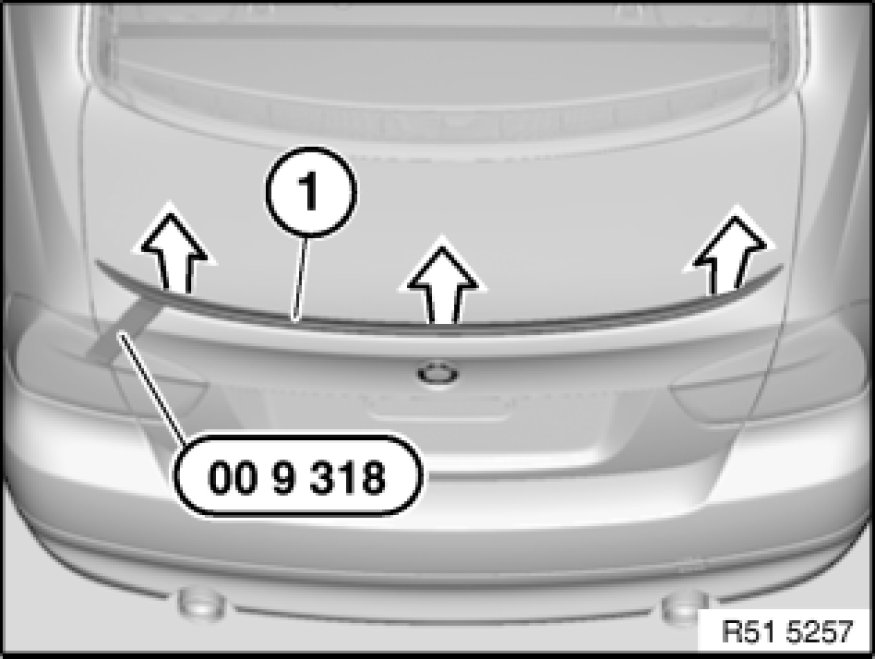
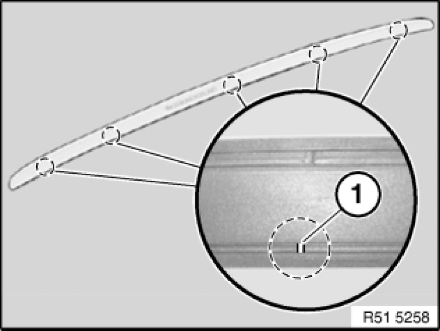
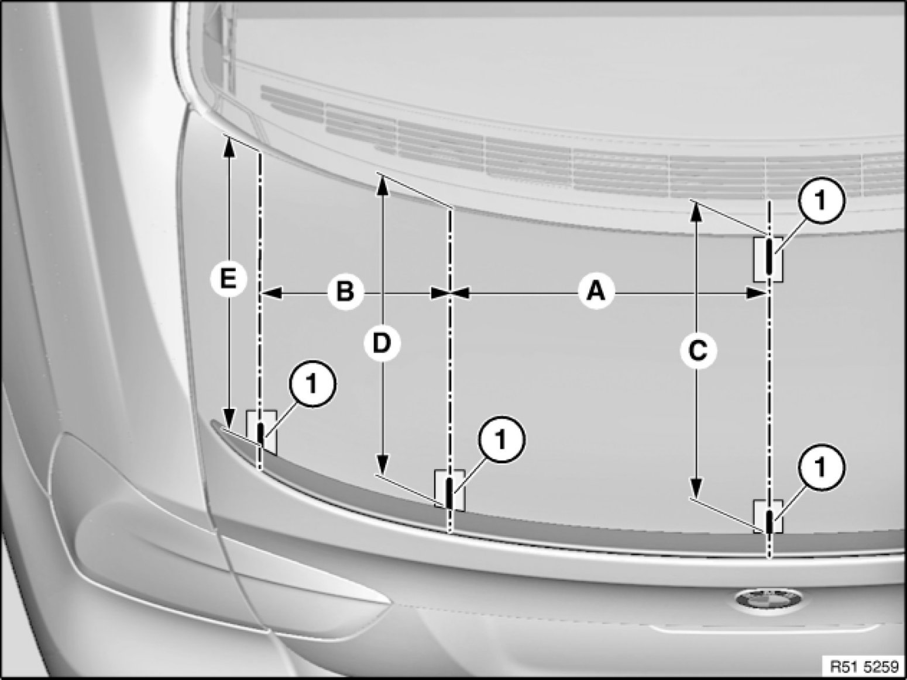
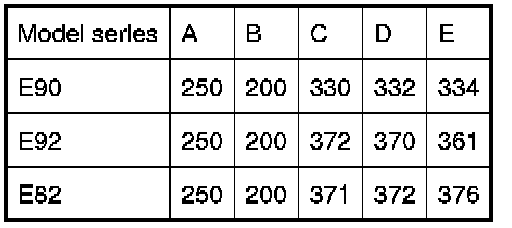
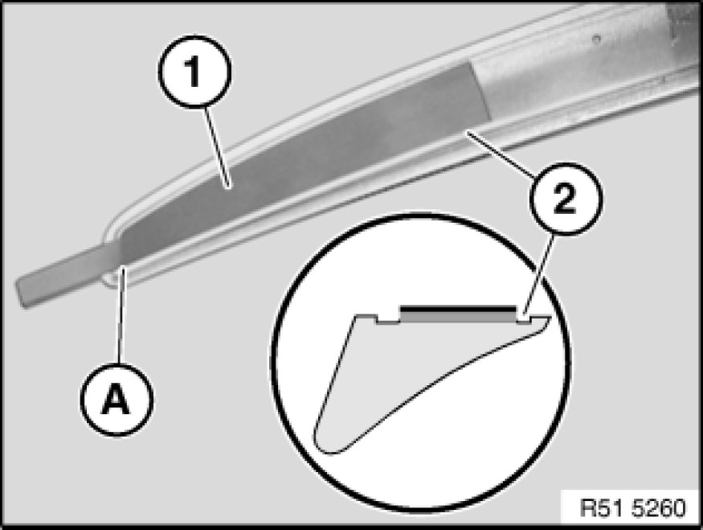
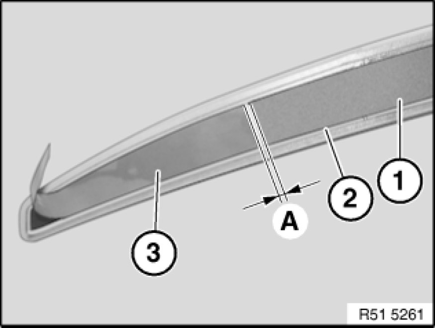
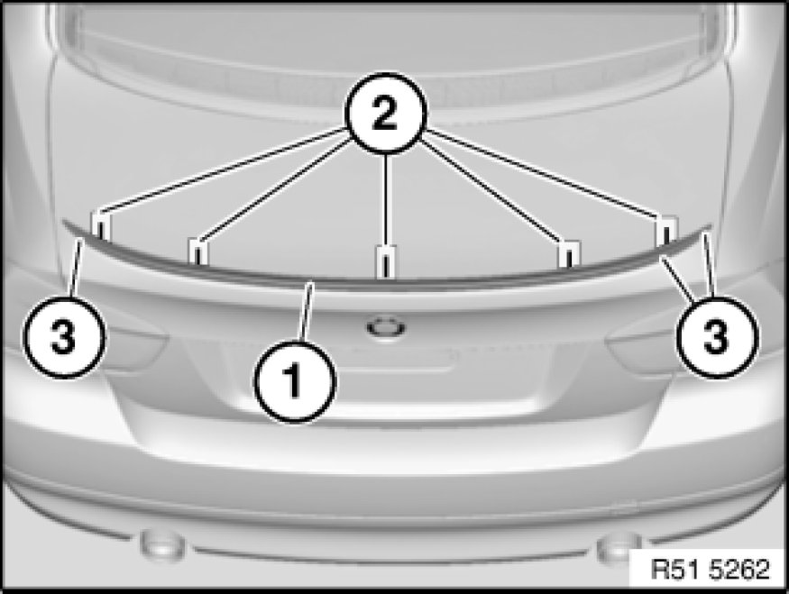

Spoiler: Service and Repair
51 71 407 - Replacing rear spoiler (M)

Special tools required:
- 00 9 318

Important!
The Instructions on component cementing with double-sided adhesive tape serve as the basis for this repair instruction and must be observed without fail.
Note:
To ensure correct bonding, it is essential to use the adhesive tape shaped parts developed for the respective rear spoiler.

Removing rear spoiler:
Carefully detach rear spoiler (1) from rear lid with special tool 00 9 318 (assembly wedge) and hot air blower.

Important!
To avoid paintwork damage, make sure markings (1) are only applied to adhesive tapes.
Carry over markings (1) from bottom to top of rear spoiler.
Aligning rear spoiler for installation:

Determine centre of rear lid.
Mark dimensions (A, B, C, D and E) on adhesive tapes (1) on left and right. Adhesive tapes must not be situated on bonding surface of rear spoiler.

Clean bonding surface on rear lid and rear spoiler with spirit.
Note:
For cleaning, use a fluff-free disposable cloth or a clean cleaning cloth.
Air drying time at least 1 minute.

Fitting rear spoiler:
Important!
Avoid the creation of bubbles and folds and do not overstretch when attaching the adhesive tape.
Pull off adhesive tape shaped part (1) from carrier film.
Position adhesive tape shaped part (1) starting from point (A) on front groove (2) and stick on.
Repeat same procedure on other side.
Note:
Groove (2) serves as a limit marker.

Note:
To enable the liner* to be pulled off, cut only the adhesive tape and not the liner into lengths on the other side.
Fold back pull-off tabs of shaped parts and of adhesive tape towards rear. In so doing, make sure adhesive tape is not exposed.
Position adhesive tape (1) at distance (A) to adhesive tape shaped part (3) on front groove (2) and stick on.
A= - 0.5 ... 2 mm
* Liner is protective film for bonding surface.

Align rear spoiler (1) using markings (2) and secure or press down slightly with a 2nd person helping.
Pull off liner using pull-off tabs (3).
Press down rear spoiler (1) firmly with thumbs or back of hands over entire surface, especially the ends.
Remove adhesive tapes, clean rear lid and rear spoiler.